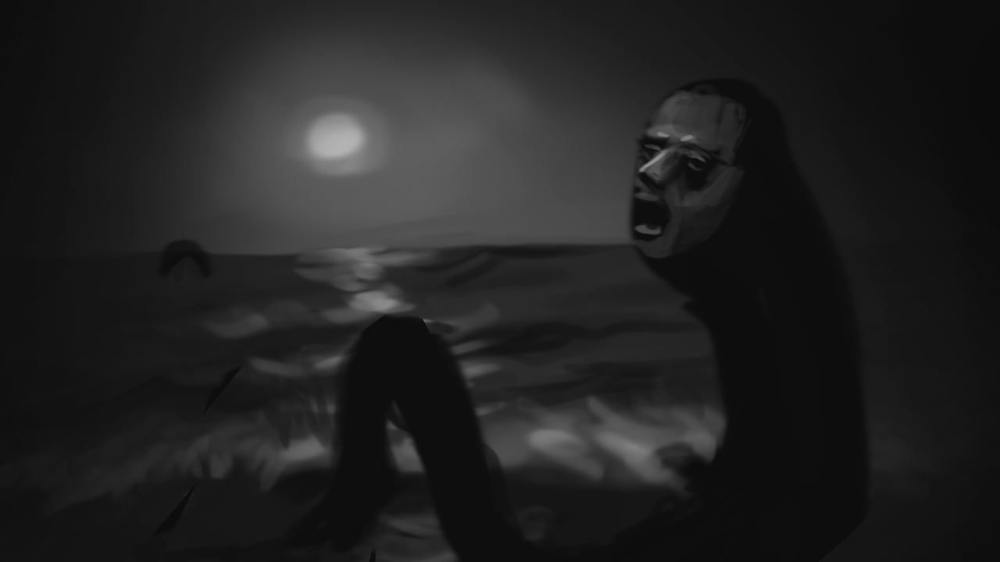

!DOCTYPE html>
<html lang="en">
<head>
   <meta charset="UTF-8">
    <meta name="viewport" content="width=device-width, initial-scale=1.0">
    <script>
  (function(d) {
    var config = {
      kitId: 'awq6zow',
      scriptTimeout: 3000,
      async: true
    },
    h=d.documentElement,t=setTimeout(function(){h.className=h.className.replace(/\bwf-loading\b/g,"")+" wf-inactive";},config.scriptTimeout),tk=d.createElement("script"),f=false,s=d.getElementsByTagName("script")[0],a;h.className+=" wf-loading";tk.src='https://use.typekit.net/'+config.kitId+'.js';tk.async=true;tk.onload=tk.onreadystatechange=function(){a=this.readyState;if(f||a&&a!="complete"&&a!="loaded")return;f=true;clearTimeout(t);try{Typekit.load(config)}catch(e){}};s.parentNode.insertBefore(tk,s)
  })(document);
</script>
   
    <style>
       body {
            margin: 0;
            padding: 0;
            height: 100%;
            background-image: url('img/screen.png');
            background-size: cover;
            background-position: center;
             background-position: center 3%;
            background-repeat: no-repeat;
        }
         body {background-color:rgb(36,36,36);}
          #ipjang  {  text-align: center;  text-decoration: none; color: white;
            position: absolute;
          left:600px;
          top:680px;

           }
           #home  {  text-align: center;  text-decoration: none; color: white;
            position: absolute;
          left:30px;
          top:25px;

           }
         .text-container {
            top: 750px;
            left: 400px;
            right: 50px;
            position: absolute;
            font-family: "pretendard", sans-serif;
            font-weight: 400;
            font-style: normal;
            font-size: 16px;
            color: white;
            height: 150px; /* Adjust height as needed */
            overflow-y: auto; /* Enable vertical scrolling */
            background-color: rgb(36, 36, 36);
        }
        
        
        .button {

            padding: 10px 20px;
            font-size: 16px;
            cursor: pointer;
            border: none;
            border-radius: 5px;
            transition: background-color 0.3s ease;
            position: absolute;
            bottom: 100px;
            left: 100px;
           
            

        }
        .button {
            background-color: #007BFF;
            color: white;
        }

        .button:hover {
            background-color: #0056b3;
        }
        .img {
            top: 150px;
            left: 510px;
            position: absolute;
        }
        a {
            color: white; /* 기본 링크 색상 */
            text-decoration: none; /* 기본 밑줄 제거 */
        }

        a:visited {
            color: gray; /* 방문한 링크 색상 */
        }

        a:hover {
            color: red; /* 마우스를 올렸을 때의 링크 색상 */
        }

        a:active {
            color: white; /* 클릭했을 때의 링크 색상 */
        }
        
    </style>
</head>
<body>
    <a id="home" href="#" onclick="location.href='240522_yajac.html'">홈</a>

    <div class="img">
    
</div>
    
    
     <div class="text-container" id="text-container">
        This is the first text. Click "Next" to see the next text.
    </div>
    <div class="button">
        
        <button class="button" onclick="nextText()">다음</button>
    </div>

    <script>
        var texts = [
            '11. 박 교수님 강의실 앞',
            '조금만 더 있으면, 졸업입니다. 대학은 시스템 특성 상 들어온 시기는 같을 지라도 나가는 시기는 다를 수 있습니다. 당신은 언제 나가게 될까요? 떠나는 게 아쉬울 수도, 후련할 수도, 시원섭섭할 수도 있지만 마지막까지 달리는 겁니다. <br><br> 오늘도 어김없이 야작을 합니다. 이제는 집보다 학교가 더 친근합니다. 이 교수님 강의실은 종종 문이 열려 있습니다. 당신도 찾아뵈어 함께 *커피 한 잔*해본 기억이 있을 텐데요. 야작 타임인 이 시간, 교수님의 연구실 문이 또 열려 있습니다. 잠시 자리를 비우신 건지, 방은 비어 있습니다. 웬일로 불도 꺼진 채로, 모니터만 켜져 있을 뿐입니다.<br><br> 모니터에 어떤 영상이 재생됩니다. 바다의 모습이 보입니다. 어두운 걸로 보아 밤 바다인 듯 한데요. 어두운 바다에서 무언가 기어 나옵니다. 바다 뱀이었다면 코미디로 끝나겠지만, 형체가 가까워질수록 웃을 수 없어집니다. 사람의 얼굴입니다. ',
            '검은 얼굴이 고통스러운 표정으로 화면 가까이 다가옵니다. 어떻게 할까요? <br><br>                                                                                       <a href="10_704B_dice.html">1.교수님 공포 영화도 보시나? 보다 말고 어디 가셨을까.</a>                            <br>                                                                                                                               <a href="10_704B_dice.html">2.무섭다. 세상에 볼 것도 많은데 저런 영화는 왜 틀어져 있는 거야? </a> <br>                                     <a href="10_704B_dice.html">3."교수님 컴퓨터 해킹 당했나보다."</a> <br>    <br>'
            
        ];
        var currentIndex = 0;

        function updateText() {
            var textContainer = document.getElementById('text-container');
            textContainer.innerHTML = texts[currentIndex];
        }

        function nextText() {
            if (currentIndex < texts.length - 1) {
                currentIndex++;
                updateText();
            } else {
                alert("You have reached the end of the texts.");
            }
        }

        function prevText() {
            if (currentIndex > 0) {
                currentIndex--;
                updateText();
            } else {
                alert("You are already at the first text.");
            }
        }

        // Initialize the text container with the first text
        updateText();


    </script>
   

</body>
</html>